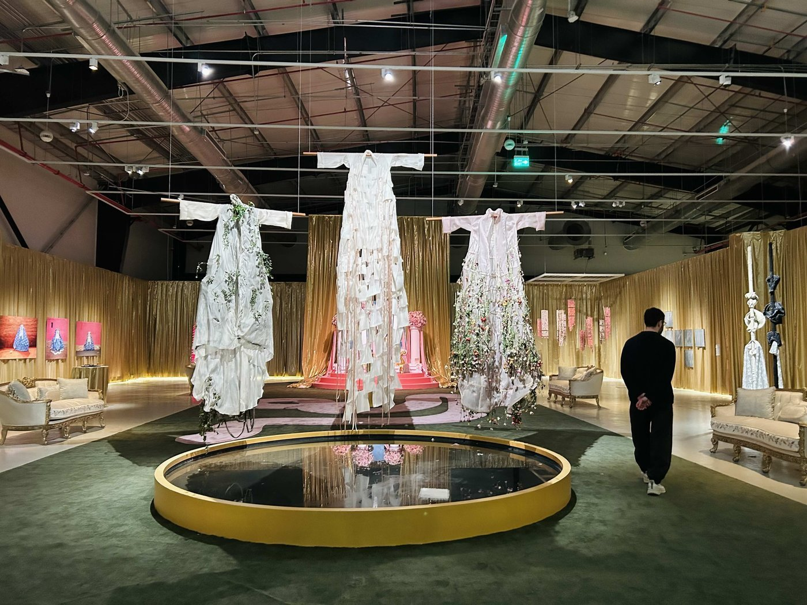
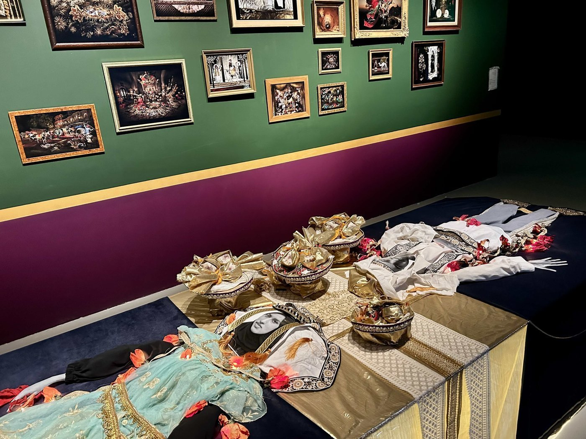
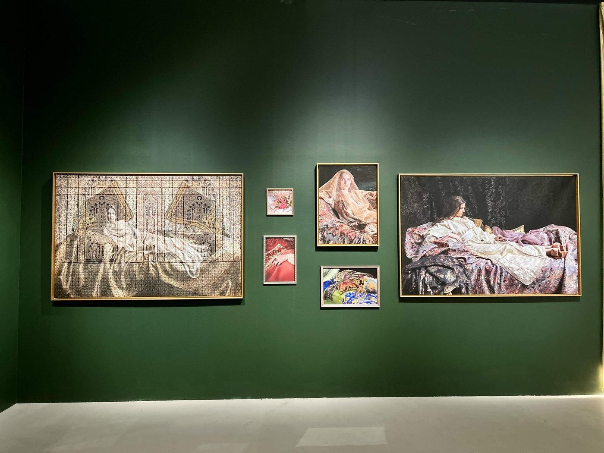
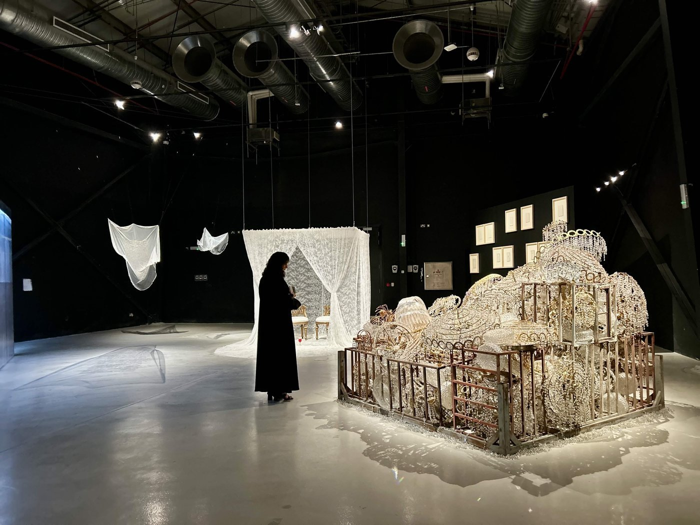
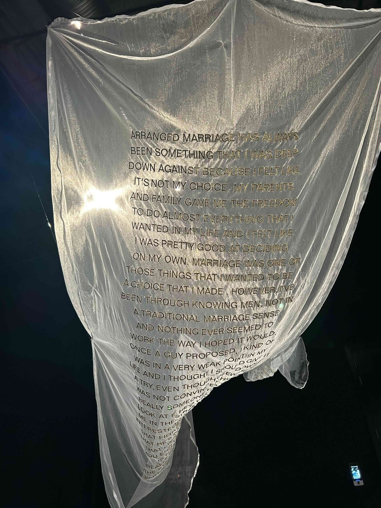

전시 개요와 사우디 사회 맥락
사우디아라비아 리야드 내 잭스 디스트릭트(JAX District)에 위치한 국립현대미술관(SAMoCA)에서 2026년 1월 18일부터 4월 26일까지 특별전 '어 나이트 오브 어 라이프타임(A Night of a Lifetime)'이 개최됐다. 이번 전시는 사우디아라비아와 중동 지역을 비롯해 세계 각국에서 활동하는 30여 명 이상의 국제적 예술가들이 참여한 국제 전시이다.

▲ 전시장 내 대형 설치 작품들 — 출처: 통신원 촬영
전시장은 단층 구조로 이루어져 있어 규모가 아주 큰 편은 아니며, 관람 동선 역시 약 30분 내외면 충분히 둘러볼 수 있도록 구성돼 있다. 창고형 구조의 공간은 높은 층고를 가지고 있어 대형 설치 작업을 구현하기에 적합한 형태를 띠고 있었다. 전시 홍보가 결혼이 지닌 따뜻한 정서와 축제적인 분위기를 강조하는 데 초점을 맞추고 있었다면, 실제 전시장에 들어섰을 때의 분위기는 다소 결이 달랐다.
작품들은 화려한 결혼식 이미지의 이면에 놓인 갈등과 개인의 불안, 고통, 그리고 제의적 성격을 띤 설치미술을 통해 결혼이라는 제도가 지닌 또 다른 층위를 드러내고 있었다. 특히 화려한 장식 뒤에 감춰진 어두움과 긴장감은 전시장 곳곳에서 반복적으로 감지됐고, 이를 통해 결혼이 단순한 축복의 서사만으로 환원될 수 없는 복합적인 의미를 지니고 있음을 보여주었다.

▲ 전시장 내 작품들 1 — 출처: 통신원 촬영
결혼의 상징성과 개인 경험의 서사
이번 전시는 결혼을 단순한 의례로 바라보지 않으며, 이를 개인의 선택과 가족 구조, 사회적인 기대가 서로 교차하는 복합적인 장으로 해석하고 있다. 화려한 결혼식의 상징 뒤에는 개인의 감정과 제도 사이의 긴장이 존재하며, 이러한 요소들은 다양한 현대미술 작품을 통해 드러난다. 또한 결혼을 둘러싼 개인의 경험과 목소리가 작품 속 언어로 등장하면서, 그동안 공개적으로 충분히 이야기되지 못했던 시선들이 예술이라는 형식을 통해 드러난다.
알라 타랍주니(Alaa Tarabzouni) 큐레이터는 "결혼은 사랑을 드러내는 동시에 사회적인 믿음을 형상화하는 장치"라며 "이번 전시는 인간이 왜 서로에게 선택받고 기억되기를 원하는지 탐구한다"고 설명했다.

▲ 전시장 내 작품들 2 — 출처: 통신원 촬영
전시는 결혼을 하나의 '무대'로 설정한다. 웨딩드레스와 금 장식, 사진 촬영 자세와 같은 상징들은 사랑과 축복을 시각화하는 동시에, 사회적인 기대가 개인의 삶을 어떻게 형식화하는지를 보여준다. 화려한 의례의 이면에는 욕망과 의심, 기대와 불안이 공존하며, 참여 작가들은 이러한 긴장을 은유와 과장을 통해 드러낸다. 이 전시에서 결혼은 더 이상 순수한 사랑의 결과만으로 제시되지 않는다. 오히려 지속적으로 유지되고 수행돼야 하는 하나의 구조로 나타난다. 돌봄과 인내, 그리고 합의의 과정은 결혼 이후에도 이어지는 보이지 않는 노동이며, 이러한 일상적인 행위들이 관계를 유지하는 기반으로 작동하고 있음을 보여준다.

▲ 전시를 관람하고 있는 현지여성 관람객 — 출처: 통신원 촬영
사우디아라비아 사회에서 결혼은 여전히 가족 중심의 결합 구조를 강하게 반영한다. 정략결혼이 주요한 형태로 존재하는 가운데 연애결혼 역시 점차 늘어나고 있지만, 가족 간 중개를 통한 결혼문화는 여전히 일반적인 방식으로 자리하고 있는 것이다. 이러한 구조 속에서 개인의 선택권과 감정은 중요한 긴장 요소로 드러난다. 실제로 전시장에는 정략결혼에 대한 개인의 경험을 결혼식 면사포를 떠올리게 하는 흰색 천 위에 서술한 문장 작업도 설치돼 있었다.

▲ 정략결혼에 대해 이야기하는 여성작가의 작품 — 출처: 통신원 촬영
"정략결혼은 내가 항상 마음 깊이 반대해 온 것이었다. 그것은 내 선택이 아니라고 느꼈기 때문이다. 부모와 가족은 내가 인생에서 원하는 거의 모든 것을 선택할 자유를 줬고, 나는 역시 스스로 결정을 잘 내릴 수 있다고 느꼈다. 결혼은 내가 직접 선택하고 싶었던 것 중 하나였다…"
이러한 서사는 결혼이라는 제도가 개인의 선택과 충돌하는 지점을 드러내며, 그동안 억압되거나 주변화됐던 경험이 예술을 통해 공적 담론의 영역으로 이동하는 과정을 보여준다.
해석과 확장: 문화 정책 속 전시의 의미
이번 전시는 결혼을 둘러싼 다양한 감정의 층위를 탐구한다. 사랑과 희망, 불안과 의심이 공존하는 구조 속에서 결혼은 고정된 전통이라기보다 끊임없이 재구성되는 체계로 제시된다. 일부 작품에서는 결혼 이후의 현실과 정략결혼의 구조가 암시적으로 드러나며, 이를 통해 변화하는 사회 내부의 균열 또한 함께 드러난다.
현지 언론은 이 전시를 급진적인 사회 비판이라기보다는 개인적인 경험과 감정의 층위를 탐구하는 문화적인 서사로 해석하는 경향을 보인다. 전시는 결혼을 사회 문제로 직접적으로 규정하기보다는, 개인이 경험하는 감정과 관계의 복잡성을 중심으로 풀어내고 있다는 평가를 받고 있다. 이러한 접근은 결혼이라는 주제를 보다 넓은 문화적인 경험으로 확장하는 역할을 한다.
이번 전시는 사우디의 국가 과제인 '비전 2030'이 추진하는 문화 개방 정책의 연장선 위에 놓여 있다. 예술은 직접적인 정치적 비판 대신 상징적이고 유연한 방식으로 질문을 제기하며, 변화는 급진적인 단절이 아닌 점진적인 조정의 형태로 나타나고 있다.
사우디아라비아는 여전히 보수적인 사회로 인식되지만, 동시에 국립 미술관에서 결혼과 여성의 경험을 다룬 전시가 열리고, 해외 작가와 지역 작가들이 함께 참여하며, 개인의 서사가 공공의 전시 공간에 등장하고 있다는 점은 주목할 만하다. 이는 단순한 문화 행사를 넘어 사회가 스스로의 이미지를 재구성해나가는 과정으로도 읽힌다.
결국 이러한 변화는 사우디를 둘러싼 '폐쇄적인 사회'라는 고정된 인식이 더 이상 단일한 틀만으로 설명되기 어렵다는 점을 보여주며, 변화하는 현실 속에서 새롭게 해석될 필요가 있음을 시사한다.
사진출처 및 참고자료
— 통신원 촬영
— 사우디 국립 현대미술관 인스타그램 (@samocamoc). instagram.com/samocamoc
— ≪사우디 프레스 에이전시(Saudi Press Agency)≫ (2026. 1. 27). 'A Night of a Lifetime' Exhibition Opens at SAMoCA. spa.gov.sa
— ≪아랍 뉴스(Arab News)≫ (2026. 2. 20). 'A Night of a Lifetime' takes us down the aisle in celebration of love. arab.news